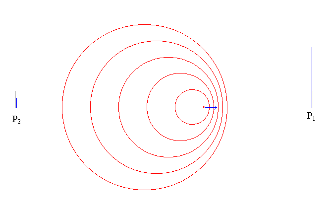
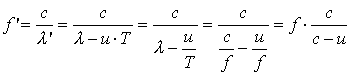
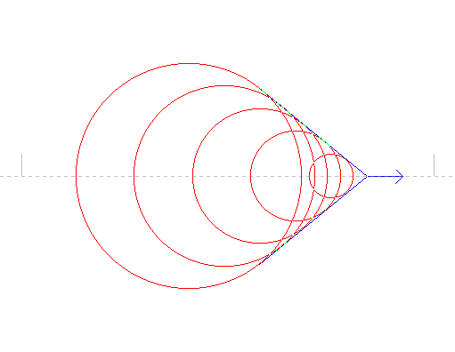
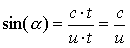

På billedet herover bevæger en bølgegiver sig med hastigheden u mod højre. Bølgerne udbreder sig med hastigheden c. Hvad vil iagttagere ved de to punkter P1 og P2 registrere?
Ringbølgerne har bølgelængden, l og frekvensen f og der gælder som bekendt c = l·f.
Desuden er svingningstiden T = 1/f.
Til højre bliver bølgelængden forkortet, idet bølgegiveren i tiden T bevæger sig strækningen u·T, og bølgelængden bliver
l' = l - u·T
En iagttager i P1 vil derfor måle en frekvens f ' bestemt ved:
c= l'·f ' Û f ' = c/l'
Indsættes udtrykket for l' fås:

Forholdet f '/f er afsat på figuren herover. Iagttageren i punktet P2 kan bruge samme formel, idet hastigheden u blot regnes negativ.
En ambulance kommer kørende med 120 km/h med udrykning. Beregn den relative ændring i frekvens, når ambulancen nærmer sig og når den fjerner sig fra iagttageren.
Rødforskydning af Hydrogenlinierne fra kvasaren 3C 273:
| farve | hvilebølgelængde l/ nm | forskudt bølgelængde l'/ nm |
blå |
486.2 |
784 |
blå |
434.1 |
690 |
violet |
410.2 |
658 |
Benyt tabellen til af beregne f og f ' og dernæst kvasarens hastighed væk fra os.
ps: Med kvasarens hastighed væk fra os, menes dens hastighed væk fra os, da lyset blev afsendt, og det kan være for flere milliarder år siden.
pps: Dopplerforskydning af lyset fra kvasaren skyldes rummets udvidelse. Det er forkert, at sige at kvasaren bevæger sig. Det er rummet der har udvidet sig i tidsrummet fra lyset blev afsendt og til nu. Om nogle milliarder år, vil vi se lys fra quasaren endnu mere rødforskudt!? Faktisk kan afstanden til kvasaren udmærket vokse med mere end lyshastigheden.
Chockbølger

Et legeme ved den blå pil udsender ringbølger, pilens længde markerer legemets hastighed. På billedet er legemets hastighed, u større end bølgernes udbredelseshastighed c. Læg mærke til, at pilen er løbet fra ringbølgerne!
Der er konstruktiv interferens langs de blå tangenter på figuren.
Dersom bølgerne er kuglebølger, bliver der konstruktiv interferens langs en kegle og den halve toppunktsvinkel, a er bestemt ved:

hvor c·t er den strækning som den største ringbølge har udbredt sig i tiden t, og u·t er den strækning som legemet har udbredt sig i samme tid.
Cerenkov stråling:
Måske tænker man, at intet kan bevæge sig hurtigere end lyset, men lyshastigheden i vand er mindre end i vacuum, så skydes en partikel gennem vand kan der dannes en chockbølge. Ved at måle vinklen i keglen kan partiklens hastighed bestemmes.